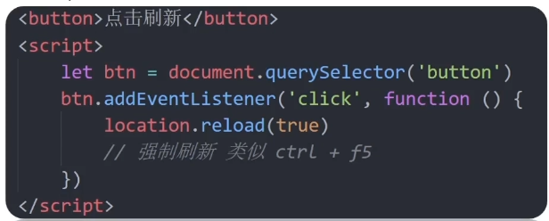

location对象
- location的数据类型是对象，它拆分并保存了URL地址的各个组成部分
-
常用属性和方法：
-
href属性获取的是完整的url和地址,对其赋值时用于地址的跳转
-
search属性获取地址中携带的参数,也就是符号?后面的部分,
就像在做get请求时候后面跟着的参数
-
hash属性在SPA中遇到的最多,譬如网易云音乐,整体页面不变只是点击了不同分块之后后面的hash会变
譬如music.163.com/#/friend music.163.com/#/download
- 常用方法:reload方法用来刷新当前页面,传入参数true时表示强制刷新
